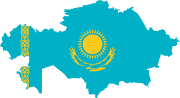
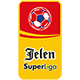

;){kind=link}
En Ourinhos el verano se pasa sensacional. Clima tropical, muchas áreas verdes y casi toda la ciudad está urbanizada, hay una buena cantidad de teatros, foros musicales, es llevadera la vida. Lo que sí, es que el clima es magnífico casi siempre. De aquel sitio es Leonardo, uno de los tantos chicos brasileños que aspiran a ser futbolistas y lo consiguen, pero no todos tienen una historia de millones de dólares, fama y fortuna.
Apenas cumplidos los 18 años, decidió empacar para irse de casa. El destino era jugar futbol en Europa y cumpliría su sueño de ir a la región donde dicen que están los mejores. Primera parada: Bielorrusia.
Leonardo llegó la capital Minsk para jugar con el Dinamo, uno de los clubes más importantes del país y de allí, casi nada tiene que ver con el estupendo calor de Ourinhos. Hay ocasiones en que no deja de nevar en casi todo el día y es natural que en el invierno se llegue a menos 10 grados centígrados, la última vez que hubo más de 30 grados fue en 1936. Pues justo en ese lugar comenzó su historia el centro delantero brasileño, luego pasó a Georgia y su “mejor” club fue uno de la segunda división de Rusia, el SKA Energia Khabarovsk.
Lamentablemente para él, su paso por la liga rusa fue de un año, no convenció y ya como jugador libre se acaba de arreglar en el pasado mercado de fichajes con FC Samtredia, de vuelta en Georgia. Según Transkermartk vale 150,000 euros, tiene la misma edad que Neymar – su compatriota- con la diferencia de que al futbolista del Barcelona lo cotiza el mercado en 70 millones de euros.
Y pese a todo, Leonardo tiene algo de especial… que es uno de los 13 jugadores no nacidos en Georgia que participan en el torneo local, es el país que menos futbolistas extranjeros tiene en su liga. Y otra cosa, que si contamos por nacionalidad, Leonardo vale lo mismo que Neymar: uno.
Apenas cumplidos los 18 años, decidió empacar para irse de casa. El destino era jugar futbol en Europa y cumpliría su sueño de ir a la región donde dicen que están los mejores. Primera parada: Bielorrusia.
Leonardo llegó la capital Minsk para jugar con el Dinamo, uno de los clubes más importantes del país y de allí, casi nada tiene que ver con el estupendo calor de Ourinhos. Hay ocasiones en que no deja de nevar en casi todo el día y es natural que en el invierno se llegue a menos 10 grados centígrados, la última vez que hubo más de 30 grados fue en 1936. Pues justo en ese lugar comenzó su historia el centro delantero brasileño, luego pasó a Georgia y su “mejor” club fue uno de la segunda división de Rusia, el SKA Energia Khabarovsk.
Lamentablemente para él, su paso por la liga rusa fue de un año, no convenció y ya como jugador libre se acaba de arreglar en el pasado mercado de fichajes con FC Samtredia, de vuelta en Georgia. Según Transkermartk vale 150,000 euros, tiene la misma edad que Neymar – su compatriota- con la diferencia de que al futbolista del Barcelona lo cotiza el mercado en 70 millones de euros.
Y pese a todo, Leonardo tiene algo de especial… que es uno de los 13 jugadores no nacidos en Georgia que participan en el torneo local, es el país que menos futbolistas extranjeros tiene en su liga. Y otra cosa, que si contamos por nacionalidad, Leonardo vale lo mismo que Neymar: uno.
La liga de Georgia apenas cuenta con 13 foráneos y la Premier League de Inglaterra es la que más tiene con 350. Leonardo, que dejó su natal Ourinhos hace cuatro años, forma parte además de la legión más numerosa. Los brasileños conquistan el balompié europeo, tienen para la presente temporada a 550 representantes y con cierta distancia del segundo sitio que es Serbia con 292.
Entre las 10 primeras naciones que más exportan jugadores a las diferentes ligas de Europa, siete son precisamente de ese continente, dos de América (Brasil y Argentina) y uno de África (Nigeria); pero si ampliamos a los 20 primeros, los africanos aumentan su participación a cuatro (Ghana, Senegal y Costa de Marfil, además de Nigeria) y nuestra región apenas se queda con ese par de representantes.
El censo contabilizó un total de 147 naciones que figuran con al menos un futbolista, es decir 70.3% de las naciones afiliadas a la FIFA. Sin duda la presencia de Brasil es la más dominante no sólo en número sino también es la nacionalidad más requerida en 13 de las 49 ligas estudiadas. Ningún país tiene el “dominio” de torneos como los sudamericanos.
Entre las 10 primeras naciones que más exportan jugadores a las diferentes ligas de Europa, siete son precisamente de ese continente, dos de América (Brasil y Argentina) y uno de África (Nigeria); pero si ampliamos a los 20 primeros, los africanos aumentan su participación a cuatro (Ghana, Senegal y Costa de Marfil, además de Nigeria) y nuestra región apenas se queda con ese par de representantes.
El censo contabilizó un total de 147 naciones que figuran con al menos un futbolista, es decir 70.3% de las naciones afiliadas a la FIFA. Sin duda la presencia de Brasil es la más dominante no sólo en número sino también es la nacionalidad más requerida en 13 de las 49 ligas estudiadas. Ningún país tiene el “dominio” de torneos como los sudamericanos.
Extranjeros en Europa
| Nacionalidad | Numero |
|---|
| Nacionalidad | Número |
|---|---|
| Brasil | 550 |
| Serbia | 292 |
| Francia | 269 |
| Croacia | 191 |
| Inglaterra | 190 |
| España | 185 |
| Argentina | 180 |
| Portugal | 157 |
| Nigeria | 143 |
| Bosnia-H | 121 |
| Ghana | 108 |
| Ucrania | 101 |
| Holanda | 99 |
| Senegal | 96 |
| Costa Marfil | 95 |
| Eslovaquìa | 95 |
| Rusia | 91 |
| Suecia | 85 |
| Bélgica | 81 |
| Alemania | 79 |
| Irlanda | 79 |
| Italia | 75 |
| Montenegro | 75 |
| Georgia | 69 |
| Polonia | 67 |
| Camerún | 66 |
| Dinamarca | 63 |
| Macedonia | 61 |
| Marruecos | 58 |
| Rep. Checa | 52 |
| Rumania | 52 |
| Grecia | 50 |
| Albania | 49 |
| Eslovenia | 47 |
| Islandia | 47 |
| Colombia | 46 |
| Suiza | 46 |
| Estados Unidos | 45 |
| Uruguay | 45 |
| Bulgaria | 43 |
| Irlanda Norte | 43 |
| Austria | 40 |
| Escocia | 40 |
| Japón | 36 |
| Noruega | 36 |
| Cabo Verde | 34 |
| Finlandia | 34 |
| Argelia | 32 |
| Lituania | 32 |
| Malí | 31 |
| RD Congo | 29 |
| Costa Rica | 28 |
| Australia | 27 |
| Bielorrusia | 27 |
| Israel | 24 |
| Chile | 23 |
| Egipto | 23 |
| Gales | 23 |
| Letonia | 23 |
| Paraguay | 23 |
| Hungría | 22 |
| Venezuela | 22 |
| Guinea | 21 |
| Sudáfrica | 19 |
| Túnez | 19 |
| Moldavia | 17 |
| Perú | 17 |
| Burkina Faso | 16 |
| México | 15 |
| Armenia | 13 |
| Congo | 13 |
| Corea del Sur | 13 |
| Gambia | 13 |
| Uzbekistán | 13 |
| Benín | 12 |
| Estonia | 12 |
| Gabón | 12 |
| Haití | 11 |
| Togo | 11 |
| Turquía | 11 |
| Guinea Bissau | 10 |
| Jamaica | 10 |
| Sierra Leona | 10 |
| Trinidad y Tobago | 10 |
| Canadá | 9 |
| Liberia | 9 |
| Chipre | 8 |
| Ecuador | 8 |
| Kenia | 8 |
| Honduras | 7 |
| Kosovo | 7 |
| Liechtenstein | 7 |
| Zambia | 7 |
| Angola | 6 |
| Guadalupe | 6 |
| Nueva Zelanda | 6 |
| Zimbawue | 6 |
| Curazao | 5 |
| Guinea Ecuatorial | 5 |
| Irán | 5 |
| Luxemburgo | 5 |
| Mozambique | 5 |
| Panamá | 5 |
| Uganda | 5 |
| Comoras | 4 |
| Martinica | 4 |
| Rep. Centroafricana | 4 |
| Turkmenistán | 4 |
| Kirgistán | 4 |
| Islas Faroe | 3 |
| Palestina | 3 |
| Ruanda | 3 |
| Antigua y Barbuda | 2 |
| Azerbaiyán | 2 |
| Burundi | 2 |
| Chad | 2 |
| China | 2 |
| El Salvador | 2 |
| Filipinas | 2 |
| Libano | 2 |
| Madagascar | 2 |
| Malta | 2 |
| Mauritania | 2 |
| Surinam | 2 |
| Afganistán | 1 |
| Barbados | 1 |
| Bolivia | 1 |
| Corea del Norte | 1 |
| Cuba | 1 |
| Gibraltar | 1 |
| Guam | 1 |
| Guayana Francesa | 1 |
| Irak | 1 |
| Islas Caymán | 1 |
| Kazajistán | 1 |
| Libia | 1 |
| Montserrat | 1 |
| Níger | 1 |
| Nueva Caledonia | 1 |
| Santa Lucía | 1 |
| Sudán | 1 |
| Tailandia | 1 |
| San Vicente | 1 |
| Siria | 1 |
| Tayikistan | 1 |
| Reunión | 1 |
| Somalia | 1 |
Hablando del continente americano entre los primeros 70 del mundo aparecen 10 naciones, siendo México el décimo exportador con 15 jugadores, rebasado por países de la Concacaf como Estados Unidos (45) y Costa Rica (28).
APOEL es ya parte de la épica de la Champions League. Hace unos años (en 2012) compitió ante el poderoso Real Madrid en cuartos de final del torneo, lo suficiente para ser una leyenda en su país, Chipre.
Y lo hizo, como ahora lo hace, con jugadores que en su mayoría no son nacidos en esta isla del Mediterráneo. Para su temporada 2014-15 su plantilla la comprenden 28 jugadores y 18 de ellos son extranjeros: brasileños, griegos, uruguayos, ingleses, irlandeses, belgas, argelinos, portugueses y noruegos conforman al club.
En Chipre casi seis de cada 10 jugadores del torneo local son no nacidos en esta isla, pero hay un caso que le supera, es la Premier League de Inglaterra donde siete de cada 10 son foráneos. En Europa al menos cuatro campeonatos tienen registrados a más futbolistas extranjeros que locales. Y únicamente dos ligas: Effofeildin (Islas Faroe) y Umaglesi (Georgia) tienen menos del 10% de sus deportistas que son de otra nación. Por eso es especial nuestro chico Leonardo del FC Samtredia.
Los extranjeros en las ligas del mundo
Premier league
67.4%
350
FRA
34
First Division (Chipre)
56.4%
209
BRA
30
Primeira Liga (Por)
55.1%
295
BRA
116
Serie A
53.2%
313
BRA
39
Jupiler Pro League (Bel)
48.3%
217
FRA
53
BGL Ligue (Lux)
47.2%
180
FRA
64
Bundesliga
46.8%
242
SWE
18
Super Liga (Sui)
46.5%
120
ALB
10
Ligue 1
45.4%
250
SEN
22
Premier Liga (Rus)
44.1%
181
BRA
21
Scottish Premiership
41.5%
123
ENG
46
Premyer Loqasi (Aze)
41.2%
94
BRA
21
Liga BBVA
39%
191
ARG
34

Premier Liga (Kaza)
38.4%
117
SRB
16
Super Liga (Gre)
37%
202
ARG
26
Premier League (Malta)
34.2%
119
BRA
25
Tippeligaen (Nor)
33.8%
130
ISL
17
Welsh Premier (Gales)
33.5%
107
ENG
101
Eredivisie
30.7%
140
BEL
17

Super Liga (Tur)
30.1%
165
BRA
17
Nemzeti (Hun)
29.9%
122
SRB
24
Liga 1 (Rum)
29.4%
149
BRA
23
Virsliga (Letonia)
29.1%
81
UKR
12
A Lyga (Litu)
28.8%
78
RUS
15

Veikkausliiga (Fin)
28.2%
86
BRA
9
Superligaen (Din)
27.7%
83
SWE
14

Ekstraklasa (Pol)
27.5%
129
SVK
17
Prva Liga (Eslovenia)
27.1%
72
HRV
34
Premier Ucrania
26.8%
92
BRA
28
Diviza Nationala (Mol)
26.8%
87
ROU
13
Allsvenskan (Sue)
25.9%
96
GHA
14
Bundesliga (Aut)
25.5%
67
DEU
13
Synot Liga (Rep. Checa)
24.8%
102
SVK
44
Agrupa (Bul)
24.7%
85
BRA
13
Vysshaya Liga (Bielo)
23.7%
58
UKR
25
Premijer Liga (BH)
22.6%
98
SRB
41
Bardsragujn (Armenia)
22.3%
49
RUS
12
Premium Liga (Esto)
21.8%
53
RUS
22
Fortuna Liga (Eslovaquia)
19.5%
70
SRB
18
Ligat Haal (Isr)
18.8%
82
BRA
15
HNL (Cro)
18.3%
60
BIH
21
Pepsideild (Islandia)
15.4%
52
ENG
8

Superliga (Serbia)
15.2%
75
MNE
29
Kategoria Superiore (Alb)
14.8%
46
NIG
10

League of Ireland
14.1%
42
GBR
18
Danske Bank (I. Nte)
11.5%
48
IRL
29
Pvra Makedonska (Mace)
10%
23
BGR
7
Effodeildin (I.Faroe)
7.3%
20
SRB
4
Umaglesi Liga (Geo)
4%
13
UKR
4
El 47% de los campeonatos europeos (23) superan la cifra de 100 futbolistas no nacidos en su país para reforzar a sus clubes, son seis ligas que rebasan los 200 y dos de ellos ya llegan a las tres centenas (Premier League y Serie A de Italia). Otra conclusión: ningún campeonato tiene menos de 10 extranjeros.
Por cierto, México seguro se alista a recibir un lote de camisetas extras con el nombre de Chicharito y el número 14 del Real Madrid y podemos especular que romperá récord de ventas de un mexicano que esté en un club europeo; pero otra cosa también podemos garantizar: que no venderán (nunca) la playera de José Alpuche, oriundo de Minatitlán, quien se gana la vida en el Gandzasar de Armenia. En Europa hay de todo.
20 Conclusiones del “Primer Censo de Extranjeros 2014-15”
Únicamente se consideran futbolistas que estén en las primeras divisiones sin importar si son o no comunitarios.
1
Uno de cada 10 extranjeros en el futbol europeo es de Brasil (son 550). En total hay 147 nacionalidades en esta temporada 2014-15.
2
Los 147 países y territorios con presencia en el censo se distribuyen de la siguiente manera: Europa (52), África (42), América (32), Asia (17) y Oceanía (4)
3
Del total de integrantes de cada una de las confederaciones, cuál es el porcentaje de representación que tienen en Europa: Conmebol (100%), UEFA (98.1%), África (77.7%), Concacaf (53.6%), Asia (38.2%) y Oceanía (27.2%)
4
¿Cuál es el país de cada confederación con más jugadores en Europa? Nigeria (África) 143; Japón (Asia) 36; Estados Unidos (Concacaf) 45; Brasil (Conmebol) 550; Serbia (UEFA) 292; Nueva Zelanda (Oceanía) 6.
5
¿Quiénes son los cinco países más exportadores de Concacaf? Estados Unidos (45), Costa Rica (28), México (15), Haití (11), Jamaica y Trinidad (10).
6
¿Qué lugar ocupa México en el ranking del censo? México ocupa el sitio 69 de exportación.
7
¿Qué países rebasan la representación de más de 100 jugadores en el censo? Ucrania (101), Ghana (108), Bosnia (121), Nigeria (143), Portugal (157), Argentina (180), España (185), Inglaterra (190) y Croacia (191).
8
¿Qué países rebasan la representación de más de 200 jugadores en el censo? Francia (269) y Serbia (292).
9
Las ligas que tienen más porcentaje de extranjeros que jugadores locales son: Premier League de Inglaterra (67.4%), First División de Chipre (56.4%), Primeira Liga de Portugal (55.1%), Serie A de Italia (53.2%) y Jupiler Pro League de Bélgica (48.3%).
10
Chipre es la segunda que tiene más porcentaje de participación de extranjeros respecto a jugadores locales, pero de sus fichajes foráneos el más alto equivale a 2.5 millones de euros; mientras en la Premier League, el valor máximo de un jugador que no nació en la isla británica es de 55 millones de euros. Es decir que el futbolista extranjero más cotizado de la Premier vale 22 veces más que su par en Chipre.
11
De las llamadas Big Five (las cinco ligas más importantes del mundo), cuatro de ellas están entre los primeros cinco sitios del ranking de mayor cantidad de extranjeros en las ligas europeas: Premier League (350 jugadores), Serie A (313), Primeira Liga (295), Ligue 1 (250) y Bundesliga (242). La única que no entra en el top-5 es la Liga BBVA que con sus 191 futbolistas no nacidos en España se instala en noveno puesto.
12
Sólo dos ligas en toda Europa tienen menos del 10% del total de los jugadores del torneo local como extranjeros: Effodeildin (Islas Faroe) con 7.3% y Umaglesi (Georgia) con 4%.
13
Ninguna liga en Europa tiene menos de 10 jugadores extranjeros en sus campeonatos.
14
Entre el mercado de verano del 2013 y del 2014, la selección de Serbia subió 10 puestos en el ranking de FIFA, a la par que el crecimiento en las cifras de exportación de esta nación, la segunda que más provee futbolistas a las ligas europeas.
15
Los países y el número de ligas donde son la nacionalidad extranjera dominante: Brasil (6); Serbia (5); Francia, Inglaterra, Rusia, Ucrania (3); Argentina y Eslovaquia (2); Bélgica, Bosnia, Bulgaria, Croacia, Albania, Alemania, Ghana, Irlanda, Irlanda del Norte, Islandia, Montenegro, Nigeria, Rumania, Senegal, Suecia y Suiza (1).
16
Las legiones que dominan las cinco ligas más importantes del mundo: Premier League (Francia), Serie A (Brasil), Ligue 1 (Senegal), Bundesliga (Suiza), Liga BBVA (Argentina).
17
Concacaf tiene presencia de 168 futbolistas y Conmebol de 892 este año en las primeras divisiones europeas.
18
Inglaterra es un caso curioso, aunque son la quinta nación que más “exporta” a otros países con 190 jugadores, 147 son a Gales y Escocia, que si bien forman parte del Reino Unido, para términos de futbol y la FIFA son naciones separadas.
19
Entre las cinco ligas con más extranjeros en Europa, en los primeros tres sitios sus respectivos países quedaron fuera en la primera ronda del Mundial de Brasil este año (Inglaterra, Italia y Portugal), el cuarto lugar (Francia) se quedó en cuartos de final y el quinto (Alemania) fue campeón del mundo pero tiene 108 extranjeros menos que la Premier League.
20
La Liga más cotizada del mundo es la Premier League de Inglaterra con un valor más de 3,730 millones de euros en su cartera de jugadores y es precisamente la que más extranjeros tiene; el torneo peor valorado es Effodeildin de Islas Faroe, la segunda con menos jugadores foráneos en todo el continente.